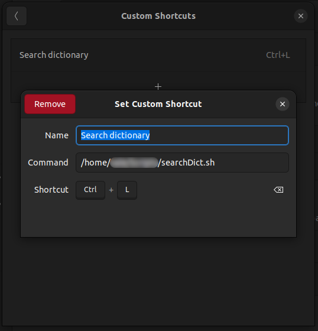

The gnome desktop offers many little nifty programs. One of them I am really fond of is the gnome dictionary. With the dictionary you can search for definitions and synonyms and it can even show you the meaning of words in different languages. I thought it would be great to have a keyboard shortcut to look up random words and definitions when browsing the web or writing documentation. So I set out to write a little script that opens up the gnome dictionary and searches for the highlighted text. I will show you how to set it up yourself.
In order to get the highlighted text we will use xclip to put the text into the clipboard buffer. Afterwards we will use xclip to get the text and pass it along to gnome-dictionary. And this is basically already everything there is to it.
Now we only need to create a keyboard shortcut in the settings that executes the bash script and voilà! Using a shortcut you can now search for any word you can highlight in your gnome desktop. 🙂
